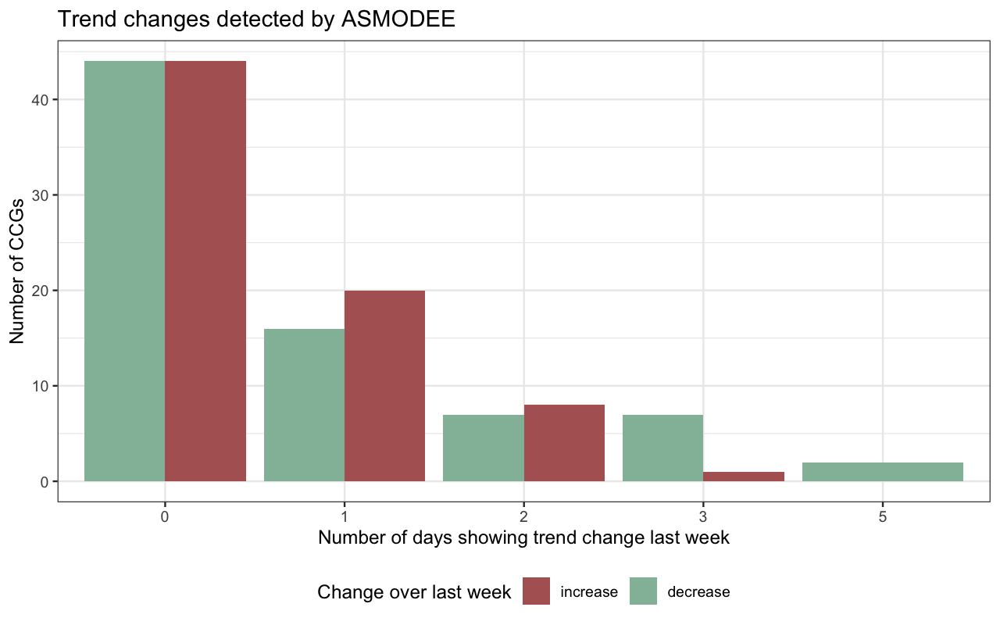
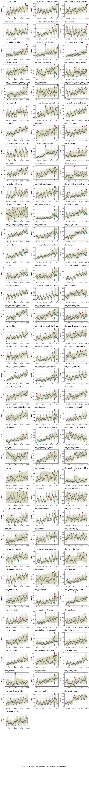

Using ASMODEE to monitor NHS pathways by CCG
Using the new algorithm ASMODEE (Automatic Selection of Models and Outlier Detection for Epidemics) we monitor changes in potential COVID-19 cases reported through the NHS pathways, including calls to 111, 999, and 111-online. These analyses are broken down by Clinical Commissioning Groups (CCG). Only the last 6 weeks of data are used. The last week of data is not used to define the temporal trend so that recent outliers can be detected.
Note: this research has not been peer-reviewed yet. This website is still experimental. Please contact the authors before using its content.
Analyses are run separately for each CCG.
These analyses use calls to 111 and 999, as well as NHS 111-online reports of potential COVID-19 cases.
This graph provides an overview of the numbers of increases/decreases detected at a CCG level by ASMODEE over the last week.

The following graph shows ASMODEE results ordered by decreasing amounts of outliers in the last 7 days.

This table summarises the numbers of changes detected by ASMODEE over the last 7 days, broken down into increases and decreases. prob is the probability of observing that many outliers in the last week under the best fitting model, given the chosen alpha threshold (5%).